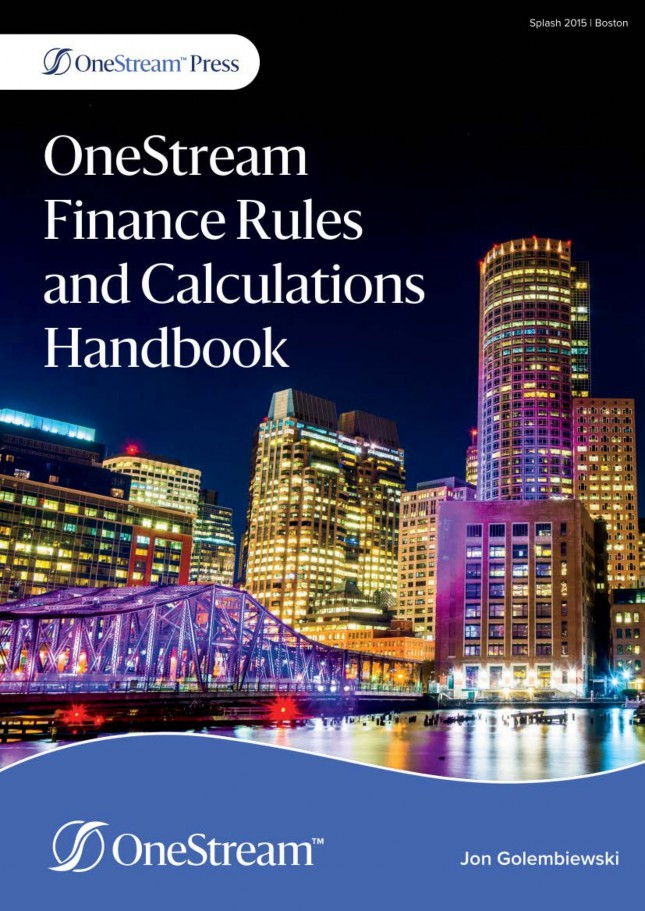

OneStream Finance Rules and Calculations Handbook
Jon Golembiewski · OneStream Press, 2022, ISBN 978-1-8382528-5-4

Chapters
Introduction11 sectionsFinance Engine Basics78 sectionsCube Data27 sectionsapi.Data.Calculate69 sectionsThe Data Buffer Cell Loop36 sectionsReporting Calculations49 sectionsManaging Calculations46 sectionsTroubleshooting and Performance78 sectionsCommon Rule Examples169 sectionsAbout This Book8 sections